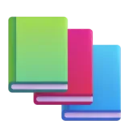
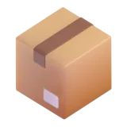

Начала фраз, которые выручают
Ich möchte… · Ich hätte gern… · Kann ich…? Подставляешь нужное слово — и фраза готова. 50 начал с двумя примерами и 20 бонусом.
- 50+20начал фраз
- 140примеров с переводом
- 7тем



340+ гайдов A0–C1 7500+ слов с аудио
7500+ слов с аудио офлайн в Notion
офлайн в Notion Goethe · telc · ÖSD
Goethe · telc · ÖSD доступ навсегда
доступ навсегда обновления бесплатно
обновления бесплатно
Всё, что входит, в одной стопке
Эта страница — одна тема. Вот что лежит внутри Stellas за один платёж.
- 340+гайдов A0–C1: объяснение, видео, упражнение, ответы
- 7500+слов с аудио и транскрипцией
- 269гайдов к экзаменам: Goethe 120, telc 89, ÖSD 60
 40пробных тестов с разбором каждого задания
40пробных тестов с разбором каждого задания 3подборки по уровням: фильмы, книги, подкасты
3подборки по уровням: фильмы, книги, подкасты- Notionтрекер, карточки и повторения, работает офлайн
- Бонусраздел A0–A2 на украинском

7 частей в одной покупке
30 €40 €
Обе платформы A0–C1: один платёж, доступ навсегда, обновления бесплатно.
Отдельно: A0–A2 — 20 €, B1–C1 — 20 €.
Как сделать фразы своими
- 01
Два начала в день
Прочитай вслух с озвучкой и оба примера.
- 02
Подставь своё
Третий пример придумай сам: о своей работе, городе, планах.
- 03
Используй сегодня
Вставь одно начало в разговор или сообщение: так фраза переходит в речь.
Хотел вежливо, а прозвучало грубовато?
Переводишь с русского слово в слово, и выходит «Ich will Kaffee» или «Geben Sie mir…» — правильно, но резко. А продавец отвечает холоднее, чем мог бы. В Stellas гайды построены на живых фразах из реальных ситуаций: сразу видно, как говорят вежливо и как по-дружески.
Темы по порядку от A0 до C1. Прогресс по темам виден в Notion.
Подготовка к экзамену внутри
Начала фраз — опора для устной части экзамена: «Ich finde…», «Meiner Meinung nach…» помогают высказать мнение, «Könnten Sie das wiederholen?» — переспросить. В платформе есть отдельный блок по экзаменам: формат, типичные ошибки, шаблоны писем и устной части.
- 120гайдов Goethe
- 89гайдов telc и DTZ
 60гайдов ÖSD
60гайдов ÖSD- 40пробных тестов с разбором
- Lesen
- Hören
- Schreiben
- Sprechen
«Мои ошибки» собирает вопросы, где ты ошибся. Повторяешь их перед экзаменом.
Что пишут ученики


Частые вопросы
Чем Ich möchte отличается от Ich hätte gern?
Оба вежливые. Ich hätte gern — чаще при заказе и покупке («мне, пожалуйста»), Ich möchte — шире: «я хотел бы».
Почему не Ich will?
Ich will — «я хочу» прямо и без смягчения. С друзьями можно, в кафе и магазине лучше Ich möchte или Ich hätte gern.
Сколько начал учить в день?
Два. Пятьдесят начал — это меньше месяца, если каждый день говорить их вслух со своими словами.
Где ставить глагол после начала?
После Kann ich…?, Ich möchte…, Ich habe vor, … zu… второй глагол уходит в конец: Kann ich mit Karte zahlen?